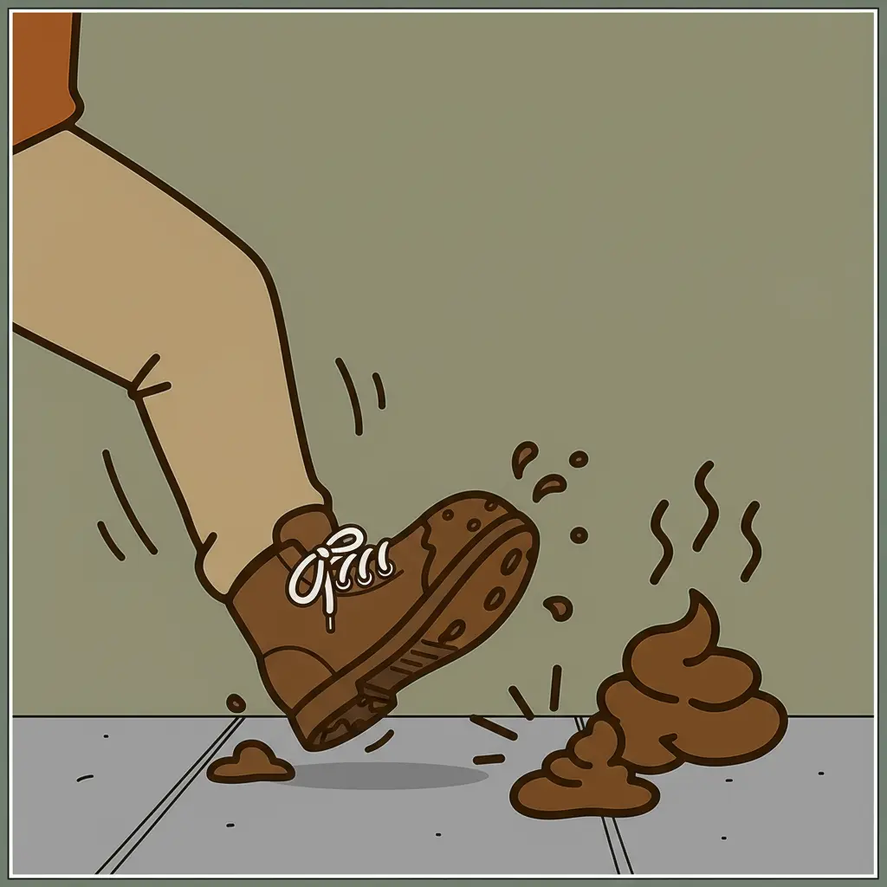
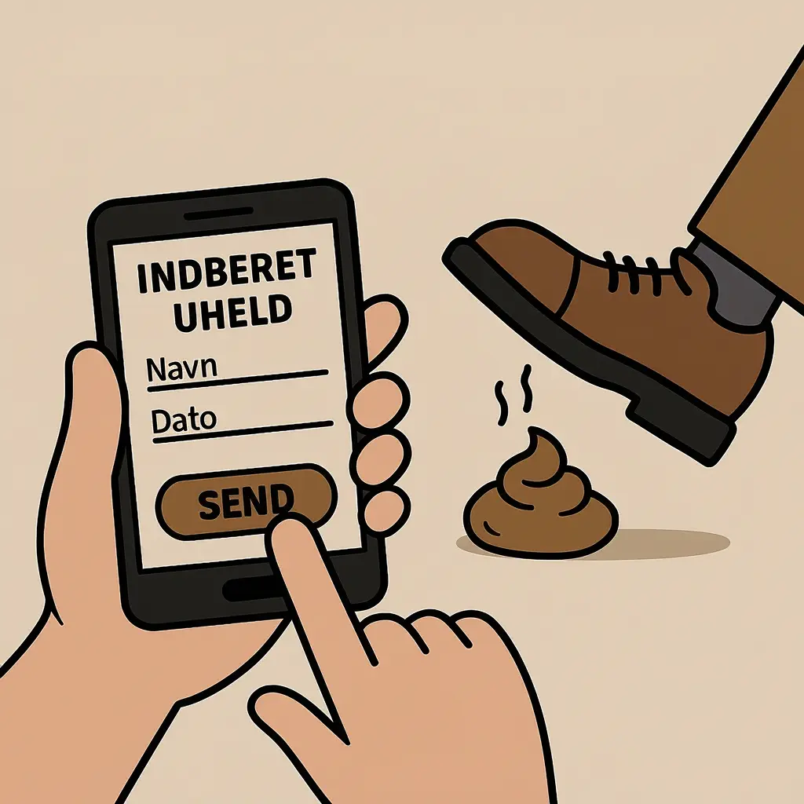

Akut 3-trins guide til at redde dine sko
Her er din guide til hvad du skal gøre hvis du træder i en hundelort. Guiden består af trin 3 du kan navigere rundt i ved at klikke rundt på skoen.
Se mereRapporter uheld, få råd til redning - og hjælp andre med at holde fortovene rene.

Her er din guide til hvad du skal gøre hvis du træder i en hundelort. Guiden består af trin 3 du kan navigere rundt i ved at klikke rundt på skoen.
Se mere
Hvis du træder i en hundelort kan du på denne side indberette hvorhenne det skete, hvordan det skete og hvor slemt det var. det hjælpere borgere i fremtiden til at vide hvor man skal være opmærkso i fremtiden.
Se mere
København, tirsdag formiddag — en ellers almindelig gåtur på Strøget udviklede sig dramatisk, da 34-årige Henrik B. pludselig gled i, hvad øjenvidner beskriver som “en formidabel størrelse”. Henrik fortæller: “Jeg hørte bare et splæt og så var alt for sent. Det føltes som at træde i en varm croissant.” Københavns Kommune har efter hændelsen udsendt en opfordring til hundeejere om at huske poserne. “Det her er en ulykke, der kunne have været undgået,” siger en talsmand fra renhold.

En gåtur søndag eftermiddag tog en uheldig drejning, da 27-årige Sofie J. trådte direkte i en nyafleveret hundelort og måtte efterlade sin sneaker i parken. “Jeg forsøgte at trække den fri, men det var for sent — jeg måtte vælge mellem skoen eller værdigheden,” udtaler Sofie. En forbipasserende hjalp med en plastikpose-redningsaktion, og skoen blev senere genfundet — dog uden ære. Københavns Politi minder om, at “det er ulovligt at forlade afføring på offentlig vej — både for dyr og mennesker.”

Efter gentagne uheld på vej til arbejdet besluttede ægteparret Birgitte og Jørgen fra Amager at handle. Med gummihandsker, poser og en stærk vilje ryddede de hele fortovet for hundelorte på under en time. “Vi var trætte af at leve i frygt,” siger Jørgen, mens han viser sin improviserede “lorteskraber” lavet af en gammel isskraber og en brødpose. Parret hyldes nu på sociale medier som “de sande helte af renhedens frontlinje.”